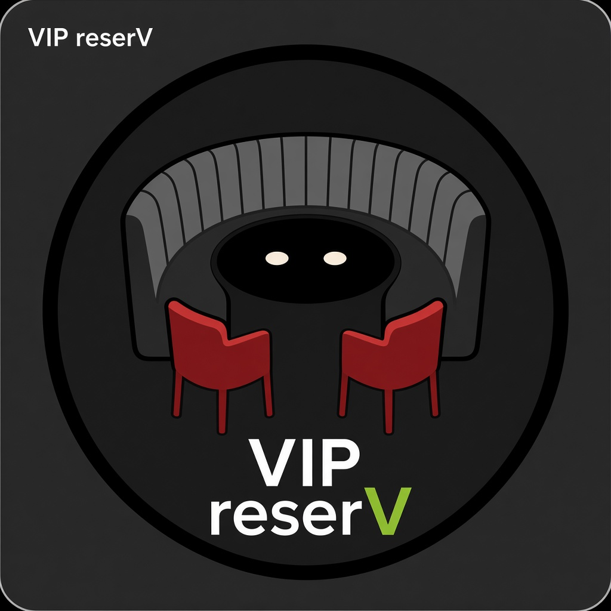

Nightlife chrome — V4 candidate beside live packs
FloqCAST V4 uses the nightlife circle (pink→cyan ring) on a solid black square. Wordmark: Floq +10% / CAST +30% (white ShoutOut-style). Compare against ShoutOut / VIP / FloqBOT.


Latest FloqCAST V4 silhouette draft beside ShoutOut, VIP reserV, and
FloqBOT (chatbot + DJ turntable for partying — replaces FloqAi mark; GIF spin available)
in Nightlife and Traditional chrome packs
(images/chrome/). Branch cursor/icon-square-green-halo-bbee.
FloqCAST V4 uses the nightlife circle (pink→cyan ring) on a solid black square. Wordmark: Floq +10% / CAST +30% (white ShoutOut-style). Compare against ShoutOut / VIP / FloqBOT.
Bot = full robot on the left. Wordmark uses ShoutOut-style bold italic; Floq white (+20%), BOT larger (+40%), text dropped lower. Record spins with edge marker. Outer nightlife ring removed.


Same lime green as the V in VIP reserV (~#8FBC32): green BOT, green CAST, and green T in ShoutOut’s OUT. ShoutOut-style bold italic wordmarks. Optional spin GIF for FloqBOT.



Traditional packs for ShoutOut (borderless square, matching nightlife framing), VIP reserV, and FloqBOT. V4 is shown again as the FloqCAST candidate (nightlife silhouette draft — not a traditional recolor yet).

Same assets as above, laid out for a quick scan. Hard-refresh if icons look cached.